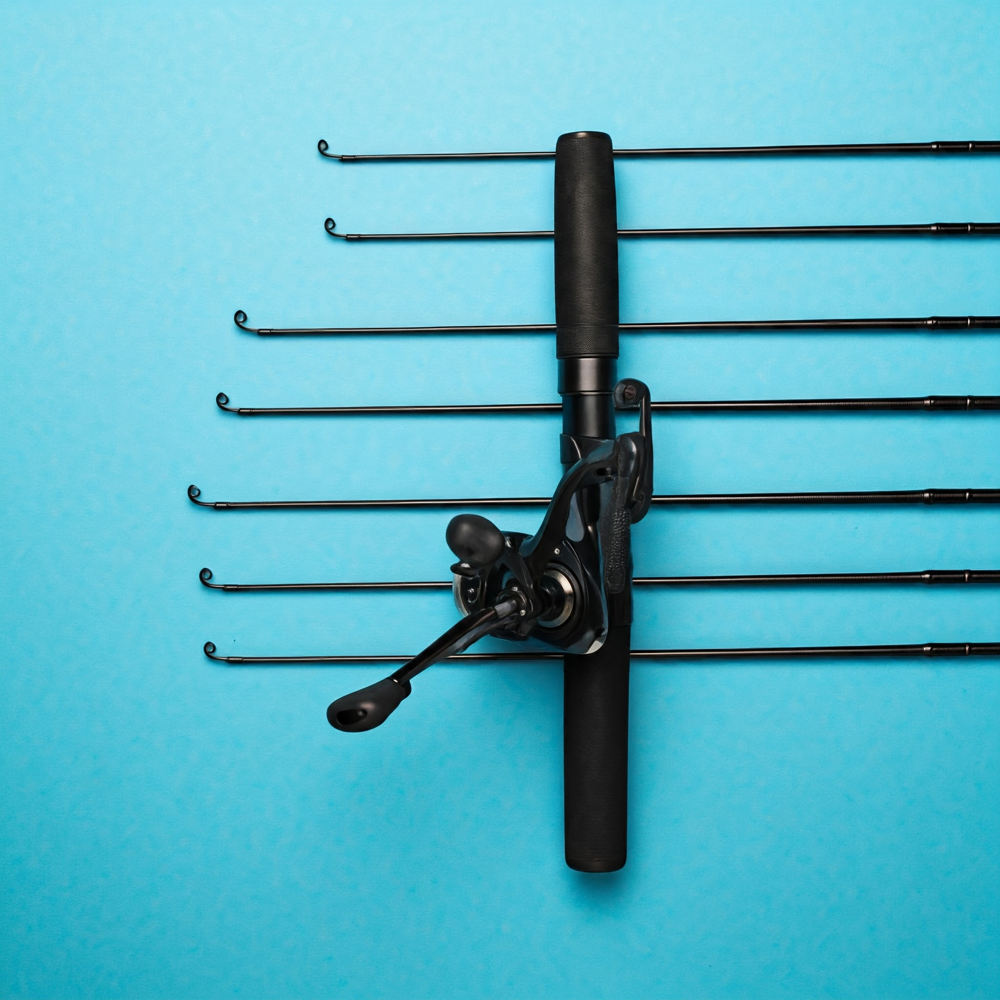
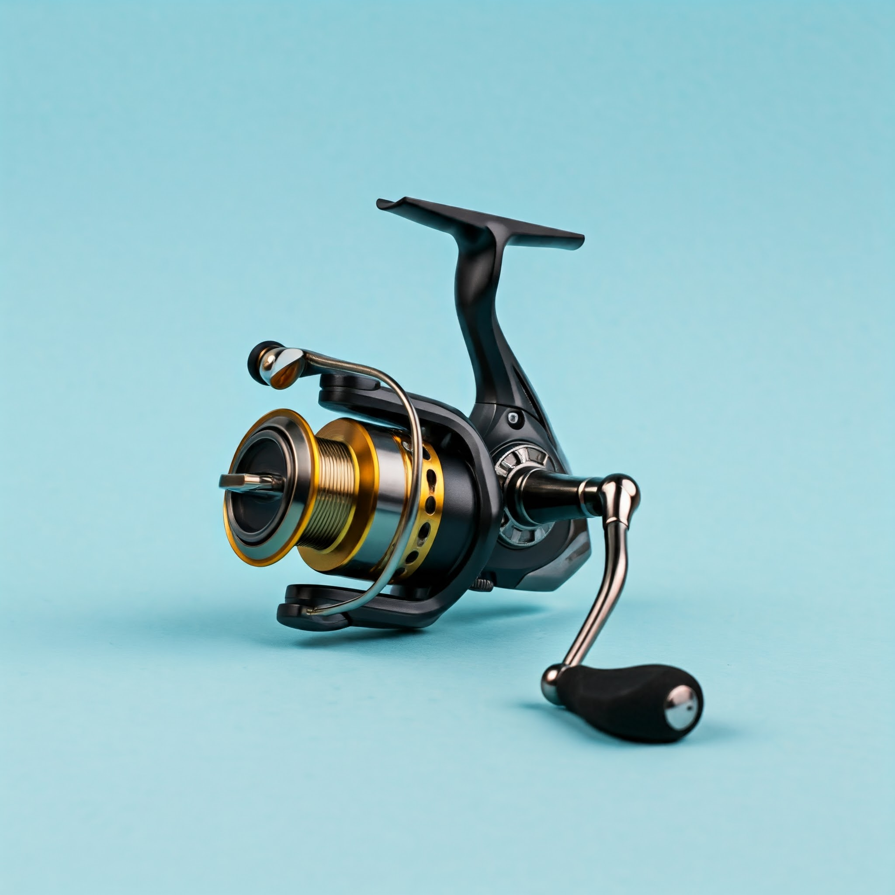
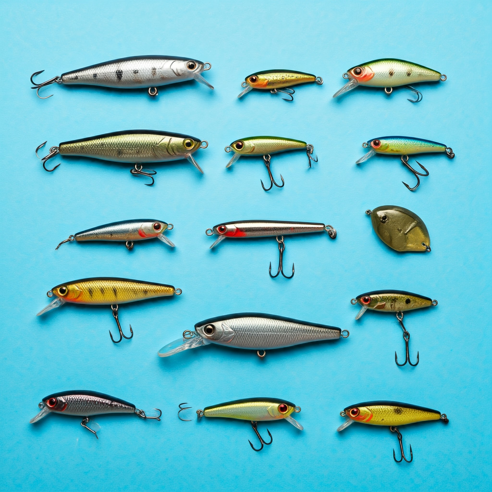
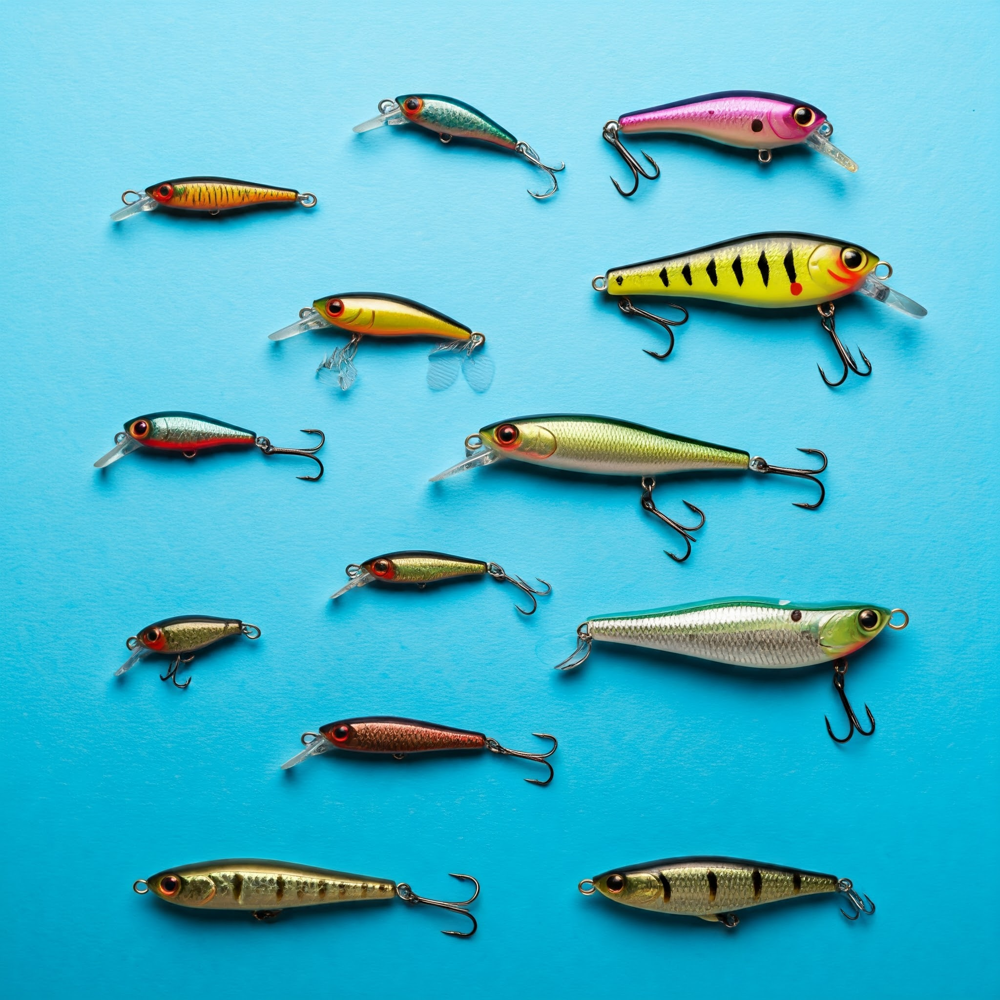
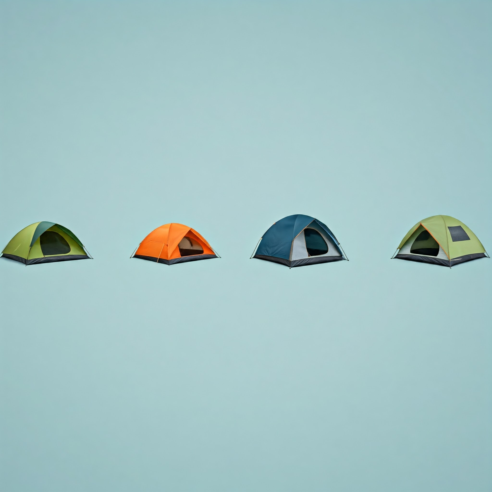
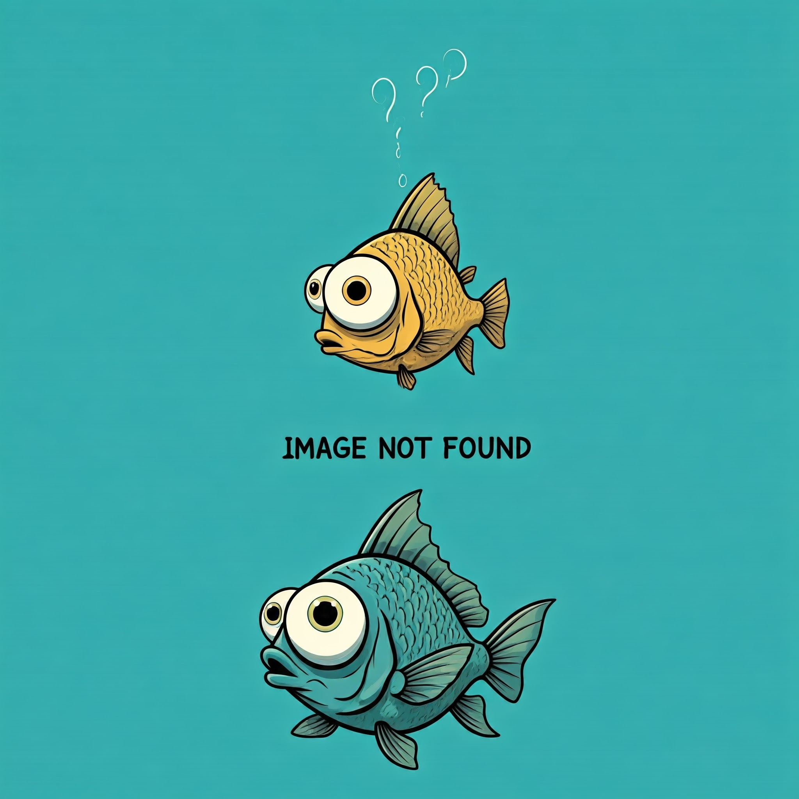

Baití
Nossos Produtos
Descubra a aventura perfeita com nossos produtos de alta qualidade!
Se você é apaixonado por natureza e busca equipamentos confiáveis para suas expedições, chegou ao lugar certo. Nossa seleção de produtos foi cuidadosamente escolhida para garantir a melhor experiência ao ar livre, combinando design inovador, resistência e durabilidade.Varas de Pesca:
Nossas varas de pesca são confeccionadas com materiais de alta resistência, proporcionando precisão e durabilidade em qualquer tipo de pescaria. Seja você um pescador iniciante ou experiente, temos a vara ideal para suas necessidades.
Resistência: Construídas para suportar os desafios da pesca, nossas varas são capazes de lidar com os peixes mais fortes.
Precisão: Design ergonômico e materiais de alta qualidade garantem arremessos precisos e maior controle sobre sua pescaria.
Versatilidade: Uma ampla variedade de modelos para atender a diferentes técnicas e tipos de pesca.
Carretilhas:
Nossas carretilhas são sinônimo de confiabilidade e performance. Com design moderno e mecanismos precisos, elas garantem arremessos longos e suaves, proporcionando uma experiência de pesca inesquecível.
Durabilidade: Construídas para durar, nossas carretilhas são resistentes à corrosão e ao desgaste, suportando as condições mais adversas.
Precisão: Sistema de freio preciso e suave, garantindo arremessos longos e controle total sobre a linha.
Tecnologia: Incorporam as últimas tecnologias em carretilhas de pesca, proporcionando maior desempenho e facilidade de uso.
Iscas:
Nossa linha de iscas é completa, oferecendo uma variedade de modelos para diferentes tipos de peixes e situações de pesca. Fabricadas com materiais de alta qualidade, nossas iscas são extremamente realistas e eficazes na atração dos peixes.
Realismo: Design realista que imita a presa natural dos peixes, aumentando suas chances de captura.
Durabilidade: Construídas para resistir às mordidas dos peixes mais agressivos, garantindo maior durabilidade.
Eficiência: Ampla variedade de cores e modelos para atender a diferentes preferências e condições de pesca.
Barracas:
Nossas barracas são perfeitas para camping e outras atividades ao ar livre. Projetadas para oferecer conforto e proteção, elas são ideais para aventureiros de todos os níveis.
Resistência: Tecidos impermeáveis e resistentes a rasgos garantem proteção contra chuva e ventos fortes.
Conforto: Design espaçoso e ventilado, proporcionando noites de sono tranquilas e revigorantes.
Facilidade de montagem: Sistema de montagem rápido e intuitivo, permitindo que você monte sua barraca em poucos minutos.
E muito mais!
Preços
Produto: Vara de Pesca Baití X1
Descrição: Vara de carbono leve, 2,10m, 10-20lb
Preço: R$ 250,00
Produto: Carretilha Baití Speed
Descrição: Carretilha com 6 rolamentos, 200m de linha
Preço: R$ 300,00
Produto: Isca Artificial Baití Pro
Descrição: Kit com 5 iscas de diferentes tamanhos
Preço: R$ 80,00

Produto: Bolsa de Pesca Baití
Descrição: Impermeável, com compartimentos ajustáveis
Preço: R$ 150,00
Produto: Anzol Baití Premium
Descrição: Pacote com 10 unidades, aço inoxidável
Preço: R$ 20,00
Produto: Caixa de Iscas Baití
Descrição: Caixa organizadora com 5 divisórias
Preço: R$ 45,00
Produto: Roupas Térmicas Baití
Descrição: Camiseta e calça, proteção UV
Preço: R$ 120,00
Produto: Lanterna LED Baití
Descrição: Compacta, resistente à água, 300 lumens
Preço: R$ 60,00
Produto: Chapéu Baití Fishing
Descrição: Com proteção UV e ventilação
Preço: R$ 50,00
Produto: Barraca Dobrável Baití
Descrição: Confortável e leve, ideal para pescarias
Preço: R$ 180,00
Nossa caminhada até aqui
A Baití nasceu da paixão por pescarias e da conexão especial que elas trazem entre pessoas e a natureza. Fundada em um pequeno vilarejo à beira de um lago deslumbrante, a ideia surgiu em uma manhã ensolarada, quando um grupo de amigos decidiu compartilhar suas experiências e equipamentos de pesca. Com o tempo, a união dessas histórias e aventuras transformou-se em um sonho: criar uma empresa que oferecesse produtos de alta qualidade para pescadores de todos os níveis.
Desde o início, a Baití se comprometeu a proporcionar não apenas ferramentas, mas também experiências. Cada isca, vara e acessório é cuidadosamente selecionado e testado por nossa equipe, que é formada por entusiastas da pesca. Acreditamos que cada produto deve contar uma história e ajudar a criar memórias duradouras nas margens dos rios e lagos.
Ao longo dos anos, a Baití cresceu e se tornou uma referência no mercado. Nossos produtos, que vão desde itens básicos até equipamentos de alta performance, são projetados para atender a todos os perfis de pescadores, desde os iniciantes até os profissionais. Além disso, buscamos constantemente inovações e parcerias com especialistas, garantindo que nossos clientes tenham acesso ao que há de melhor em tecnologia de pesca.
Mas a Baití vai além do comércio. Estamos profundamente comprometidos com a preservação dos ambientes aquáticos e a sustentabilidade. Participamos de projetos de limpeza de rios, promovemos o uso consciente dos recursos naturais e apoiamos iniciativas que visam a proteção da vida marinha. Acreditamos que pescar é mais do que um hobby; é um estilo de vida que deve ser vivido com respeito e responsabilidade.
Hoje, a Baití não é apenas uma marca, mas uma comunidade. Convidamos pescadores de todos os lugares a se juntarem a nós nessa jornada, compartilhando suas histórias e experiências. Juntos, celebramos a beleza da pesca e a importância de cuidar da natureza que nos proporciona tanto.
Seja você um pescador experiente ou alguém que está dando os primeiros passos, a Baití está aqui para equipá-lo com o que há de melhor e acompanhá-lo em cada aventura. Porque na Baití, cada lançamento é uma nova oportunidade, e cada captura é uma história esperando para ser contada.
Entre em contato
Telefone: +55 00 9 8765-4321